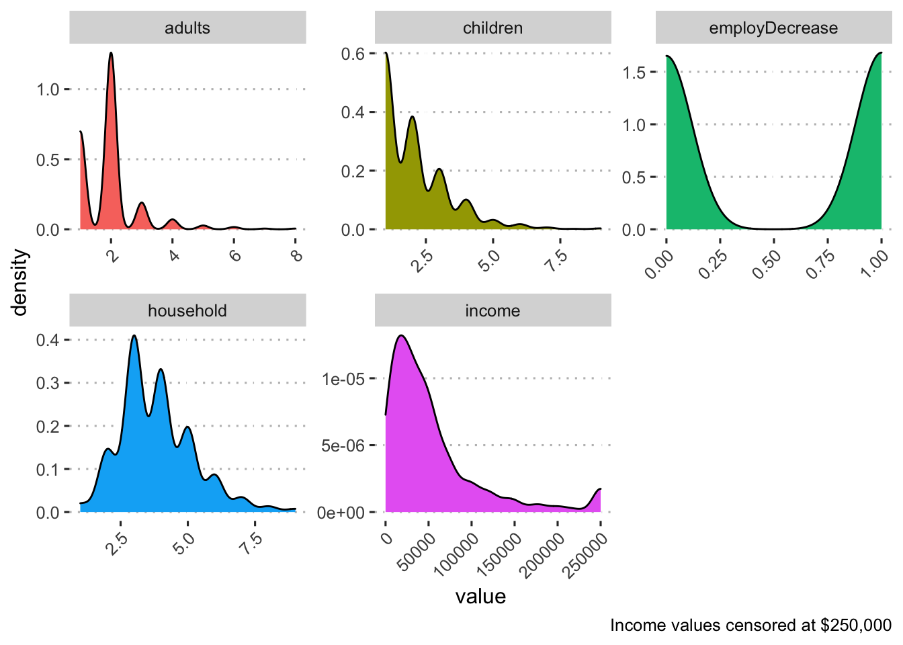

Demographics by income for Black respondents:
| variable | n | mean | sd | range |
|---|---|---|---|---|
| adults | 834 | 1.93 | 0.94 | 1.00 - 8.00 |
| children | 844 | 2.03 | 1.26 | 1.00 - 9.00 |
| employDecrease | 755 | 0.50 | 0.50 | 0.00 - 1.00 |
| household | 835 | 3.84 | 1.39 | 1.00 - 9.00 |
| income | 731 | 88,811.01 | 448,352.91 | 0.00 - 10,400,000.00 |

| variable | n | mean | sd | range |
|---|---|---|---|---|
| High Income | ||||
| adults | 376 | 1.95 | 0.73 | 1.00 - 7.00 |
| children | 379 | 1.82 | 1.07 | 1.00 - 6.00 |
| employDecrease | 362 | 0.39 | 0.49 | 0.00 - 1.00 |
| household | 377 | 3.72 | 1.20 | 1.00 - 9.00 |
| income | 380 | 146,880.53 | 611,569.22 | 0.00 - 10,400,000.00 |
| Low Income | ||||
| adults | 315 | 1.85 | 1.07 | 1.00 - 8.00 |
| children | 319 | 2.17 | 1.39 | 1.00 - 9.00 |
| employDecrease | 269 | 0.63 | 0.48 | 0.00 - 1.00 |
| household | 315 | 3.86 | 1.52 | 1.00 - 9.00 |
| income | 319 | 24,030.25 | 82,068.78 | 0.00 - 1,440,000.00 |